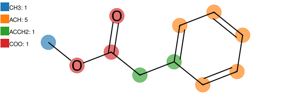
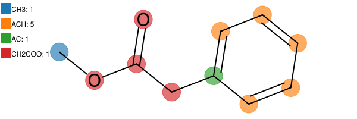

[1]:
try:
import google.colab
%pip install -q ugropy
except ImportError:
pass
Filtering multiple solutions

ugropy algorithm, some molecules may present multiple fragmentation solutions for a specific model. In such cases, the experience of the user with a model may be sufficient to determineugropy provides some heuristic methods to determine the “best solution” along with some criteria.These methods are relatively simple to implement, and users are welcome to create their own if necessary.
In the ugropy library, the fragmentation models are instances of diverse classes that require more or less information to describe a specific model.
All the fragmentation classes inherit from the base class FragmentationModel. For that, some filters are implemented for the base class FragmentationModel and are available for all the fragmentation models. Other filters are specific to a subclass, for example, the GibbsModel (unifac, psrk, dortmund, etc).
Recommendation
Is recommended to explore the “DDBST Validation” subsection on the “Tests book” section of this documentation to explore the performance of these filters on the UNIFAC model.
All filters receive a list of solutions obtained by ugropy and return another list of solutions that were filtered. Sometimes the length of the returned list could be one (only on solution selected) other times could be more (generally because the filter could not decide which one is best).
[2]:
from ugropy import unifac
FragmentationModel class filters
As said before, these filters are available for all the fragmentation models and rely on basic heuristics. Let’s check and explain each one:
Filter: Mostly polyatomic
This filter selects the solution with the highest amount of atoms occupied by polyatomic fragments (hydrogens don’t count). Let’s analyze the following example that has two solutions:
[3]:
solutions = unifac.get_groups("COC(=O)CC1=CC=CC=C1", "smiles", search_multiple_solutions=True)
[4]:
solutions[0].draw(width=600)
[4]:

[5]:
solutions[1].draw(width=600)
[5]:

To use a filter for a model, we can use the filter methods implemented in that model like the following:
[6]:
filtered = unifac.filter_mostly_polyatomic(solutions)
len(filtered)
[6]:
1
As you can observe, the filter found a unique preferred solution along with its criteria. The solution is the one that uses the groups “COO” and “ACCH2” since more atoms of the molecule are occupied by polyatomic fragments:
[7]:
filtered[0].draw(width=600)
[7]:

Filter: Mostly polarity
This filter prefers the solutions that have the most atoms occupied by fragments of and specified polarity. The arguments for the polarity could be “polar” or “apolar” respectively. A group is considered polar if its SMARTS pattern contains at least one of the following atoms: {“O”, “N”, “S”, “P”, “F”, “Cl”, “Br”, “I”}. Of course, a group is considered apolar if it does not contain any of those atoms.
[8]:
filtered_polarity = unifac.filter_mostly_polarity(solutions, polarity="polar")
len(filtered_polarity)
[8]:
1
[9]:
filtered_polarity[0].draw(width=600)
[9]:

In this case, the other solution is preferred since the “CH2COO” (a polar group) is occupying more atoms of the molecule. If we call the same filter with the “apolar” argument:
[10]:
filtered_polarity = unifac.filter_mostly_polarity(solutions, polarity="apolar")
len(filtered_polarity)
[10]:
1
[11]:
filtered_polarity[0].draw(width=600)
[11]:

The other solution is preferred, since the “ACCH2” occupies and additional atom.
GibbsModel class filters
These filters are available only for GibbsModels fragmentation models since they rely on the \(R\) and \(Q\) information about the groups.
Filter: Polarity contribution (recommended)
This filter chooses the correct solution based on the total size of the molecule occupied by groups of the specified polarity (“polar” or “apolar”). The size is either quantified by the \(R\) or \(Q\) values of the groups, specified by the user. A group is considered polar if its SMARTS pattern contains at least one of the following atoms: {“O”, “N”, “S”, “P”, “F”, “Cl”, “Br”, “I”}. Of course, a group is considered apolar if it does not contain any of those atoms.
This is the best found heuristic for GibbsModels configuring it to prioritize polar groups with the Q size criteria. Please refer to the DDBST Validation on the Tests book documentation to learn more.
For the best heuristic found, the best solution is:
[12]:
filtered_polar_Q = unifac.filter_polarity_contribution(solutions, criteria="Q", polarity="polar")
filtered_polar_Q[0].draw(width=600)
[12]:

Of course, you can change those configurations as you please:
[13]:
filtered_apolar_R = unifac.filter_polarity_contribution(solutions, criteria="R", polarity="apolar")
filtered_apolar_R[0].draw(width=600)
[13]:

Filter: Bigger polyatomics
This filter chooses the correct solution based on the total size of the molecule occupied by polyatomic groups. The size is either quantified by the \(R\) or \(Q\) values of the groups, specified by the user.
[14]:
filtered_bigger_R = unifac.filter_bigger_polyatomics(solutions, criteria="R")
len(filtered_bigger_R)
[14]:
1
[15]:
filtered_bigger_R[0].draw(width=600)
[15]:

[16]:
filtered_bigger_Q = unifac.filter_bigger_polyatomics(solutions, criteria="Q")
len(filtered_bigger_Q)
[16]:
1
[17]:
filtered_bigger_Q[0].draw(width=600)
[17]:

In this case, it doesn’t matter the selected size criteria, the same solution is preferred.